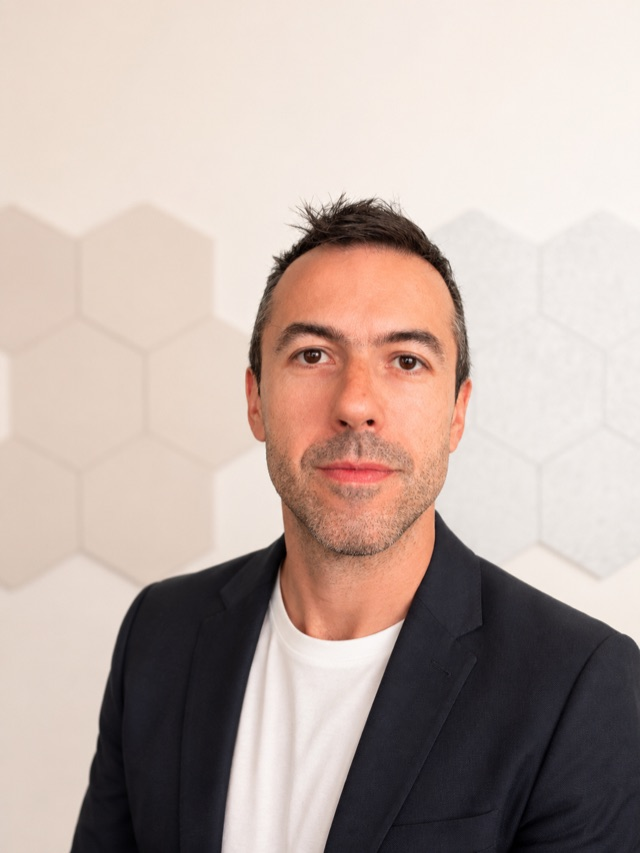

Architecte et développeur IA. Je conçois des agents évalués, observables et maîtrisés en coûttrop jargon
Je construis avec mes agents.
Je garde la main.
Développeur passionné depuis 18 ans, j'aime apprendre et créer. Mes agents codent, relisent, vérifient et surveillent. Moi, je décide, et je veille à la sécurité et aux données.

c'est moiDix-huit ans de code
Du premier poste de développeur à l'équipe d'agents. Secteurs : aéronautique, énergie, imagerie médicale, édition logicielle, logistique, assurance, notariat.
J'aime apprendre et créer. Le dev me passionne depuis 18 ans, et l'IA me permet d'aller encore plus loin.
Architecte logiciel, passé par l'aéronautique, l'énergie, la santé, le notariat, l'assurance et la logistique. Aujourd'hui, l'IA générative appliquée à des métiers où l'erreur coûte cher.
À côté : du CrossFit, du renforcement, un peu de course à pied et de la randonnée.
Ce que j'apprends, je le transmets
Ce n'est pas mon métier principal, c'est ce que je fais à côté, par goût.
Envie d'en parler ?
yannick.gardiol@yantech.fr
30 minutes, au créneau qui vous arrange